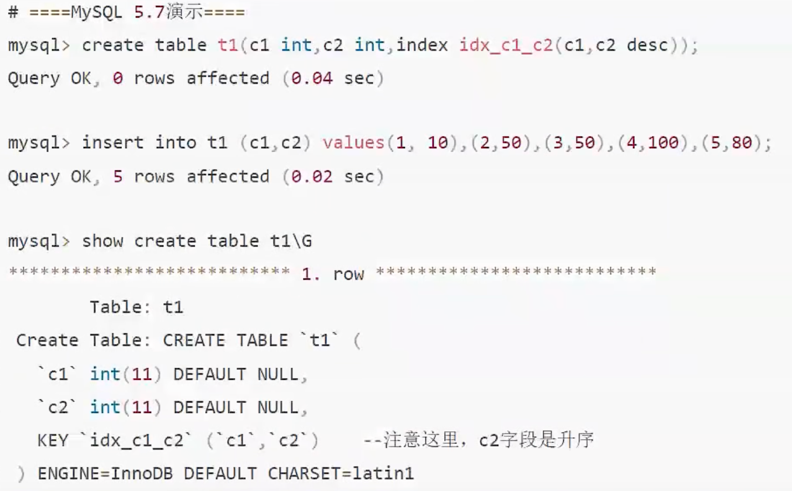

Mysql8.0新特性
修改于: 2023-02-20- 新增降序索引
MySQL在语法上很早就已经支持降序索引，但实际上创建的仍然是升序索引， 如下MySQL 5.7所示，c2字段降序， 但是从show create table看c2仍然是升序。8.0可以看到，c2字段降序。只有Innodb存储引擎支持降序索引。
- group by不会自动排序
- 5.7中分组查询时, 会自动按照分组的字段排序, 8.0 中得手动 order by
- 增加隐藏索引
使用 invisible 关键字在创建表或者进行表变更中设置索引为隐藏索引。 索引隐藏只是不可见，但是数据库后台还是会维护隐藏索引的，在查询时优化器不使用该索引， 即使用force index，优化器也不会使用该索引，同时优化器也不会报索引不存在的错误， 因为索引仍然真实存在，必要时，也可以把隐藏索引快速恢复成可见。注意，主键不能设置为 invisible.
软删除就可以使用隐藏索引，比如我们觉得某个索引没用了，删除后发现这个索引在某些时候还是有用的， 于是又得把这个索引加回来，如果表数据量很大的话，这种操作耗费时间是很多的， 成本很高，这时，我们可以将索引先设置为隐藏索引，等到真的确认索引没用了再删除。
如创建t2表，里面的c2字段为隐藏索引:
mysql › create table t2(c1 int, c2 int, index idx_c1(c1), index idx_c2(c2) invisible);
- 新增函数索引
之前我们知道，如果在查询中加入了函数，索引不生效， 所以MySQL 8引入了函数索引，MySQL 8.0.13开始支持在索引中使用函数（表达式）的值。
函数索引基于虚拟列功能实现，在MySQL中相当于新增了一个列， 这个列会根据你的函数来进行计算结果， 然后使用函数索引的时候就会用这个计算后的列作为索引。
如:
# 给t3表的c1列创建普通索引 create index idx_c1 on t3(c1); # 给t3表的c2列创建函数索引, 大写函数索引 create index func_idx on t3((UPPER(c2)))
- 窗口函数（Window Functions）：也称分析函数
从 MySQL 8.0开始，新增了一个叫窗口函数的概念，它可以用来实现若干新的查询方式。 窗口函数与 SUM（）、COUNT（）这种分组聚合函数类似，在聚合函数后面加上over（）就变成窗口函数了， 在括号里可以加上partition by等分组关键字指定如何分组， 窗口函数即便分组也不会将多行查询结果合并为一行，而是将结果放回多行当中，即窗口函数不需要再使 GROUP BY.
示例

- 默认字符集由latin1变为utf8mb4
- 在8.0版本之前，默认字符集为latin1，utf8指向的是utf8mb3， 8.0版本默认字符集为utf8mb4，utf8默认指向的也是utf8mb4。
- MyISAM系统表全部换成InnoDB表
- 将系统表（mysql）和数据字典表全部改为InnoDB存储引擎， 默认的MySQL实例将不包含MyISAM表，除非手动创建MyISAM表。
- 元数据存储变动
- MySQL 8.0删除了之前版本的元数据文件，例如表结构.frm等文件，全部集中放入mysqlibd文件里。
- 自增变量持久化
在8.0之前的版本，自增主键 AUTO_INCREMENT 的值如果大于max（primary key）+1， 在MySQL重启后，会重置AUTO_INCREMENT=max（primary key）+1， 这种现象在某些情况下会导致业务主键冲突或者其他难以发现的问题。
注解
通俗点说, mysql不会记录已经被删除的主键, 比如有索引值:
1, 2, 3, 4, 5
删除了4和5, 重启后新增数据, 自增id会从 4 开始
而且如果手动把1, 更改为其他的比如6, 主键自增的当前最大值不会变, 后面再插入的时候就可能报错; Mysql8解决了这个问题, 会识别到最大自增id更新
自增主键重启重置的问题很早就被发现（ https://bugs.mysql.com/bug.php?id=199 ）， 一直到8.0才被解決，8.0版本将会对 AUTO_INCREMENT 值进行持久化，MySQL重启后，该值将不会改变。
- innodb存储引擎select for update跳迹锁等待
对于 select … for share （8.0新增加查询共享锁的语法）或 select … for update， 在语句后面添加 NOWAIT、 SKIP LOCKED 语法可以跳过锁等待，或者跳过锁定。
- NOWAIT, 报错返回
- SKIP LOCKED, 返回结果不包含加锁行
注解
select … for update 表示查询的时候加一个排他锁
在5.7及之前的版本，select.for update，如果获取不到锁，会一直等待，直到innodb_lock_wait_timeout超时。
在8.0版本，通过添加nowait，skip locked语法，能够立即返回。 如果查询的行已经加锁，那么nowait会立即报错返回，而skip locked也会立即返回，只是返回的结果中不包含被锁定的行。
应用场景比如查询余票记录，如果某些记录已经被锁定，用skip locked可以跳过被锁定的记录，只返回没有锁定的记录，提高系统性能。
- 新增innodb_dedicated_server自适应参数
能够让InnoDB根据服务器上检测到的内存大小自动配置innodb_buffer_pool_size, innodb_log_file_size等参数， 会尽可能多的占用系统可占用资源提升性能。 解决非专业人员安装数据库后默认初始化数据库参数默认值偏低的问题， 前提是服务器是专用来给MySQL数据库的，如果还有其他软件或者资源或者多实例MySQL使用，不建议开启该参数，不然会影响其它程序。
默认是OFF关闭:
show variables like '%innodb_dedicated_server%';
- 死锁检查控制
MySQL 8.0 （MySQL 5.7.15）增加了一个新的动态变量 innodb_dgadlock_detect， 用于控制系统是否执行 InnoDB死锁检查，默认是打开的。 死锁检测会耗费数据库性能的，对于高并发的系统，我们可以关闭死锁检测功能，提高系统性能。
但是我们要确保系统极少情况会发生死锁，同时要将锁等待超时参数调小一点，以防出现死锁等待过久的情况。
默认打开的:
show variables like '%innodb_deadlock_detect%'
- undo文件不再使用系统表空间
默认创建2个UNDO表空间，不再使用系统表空间。
- binlog日志过期时间精确到秒
之前是天，并且参数名称发生变化.
在8.0版本之前，binlog日志过期时间设置都是设置expire_logs_days参数， 而在8.0版本中，MySQL默认使用binlog_expire_logs_seconds参数。
- DDL原子化
InnoDB表的DDL文持事务完整性，要么成功要么回滚。
MySQL 8.0开始支持原子DDL操作，其中与表相关的原子 DDL只支持 InnoDB 存储引擎。
一个原子 DDL 操作内容包括：更新数据字典，存储引擎层的操作，在 binlog 中记录 DDL 操作。
支持与表相关的DDL：数据库、表空间、表、索引的 CREATE、ALTER、DROP 以及 TRUNCATE TABLE。 比如删除两个表, 即使t2报错, t1也会被成功删除:
drop tables t1, t2;
支持的其它DDL：存储程序、触发器、视图、UDF 的 CREATE、DROP 以及ALTER语句。
支持账户管理相关的 DDL：用户和角色的 CREATE、ALTER、DROP 以及适用的 RENAME等等。
- 参数修改持久化
MySQL 8.0版本支持在线修改全局参数并持久化，通过加上PERSIST关键字， 可以将修改的参数持久化到新的配置文件（mysqld-auto.cnf）中， 重启MySQL时，可以从该配置文件获取到最新的配置参数。set global 设置的变量参数在mysq重启后会失效。
系统会在数据目录下生成一个包含json格式的mysqld-auto.cnf 的文件, 当my.cnf 和mysqld-auto.cnf 同时存在时，后者具有更高优先级:
set persist innodb_lock_wait_timeout=25;